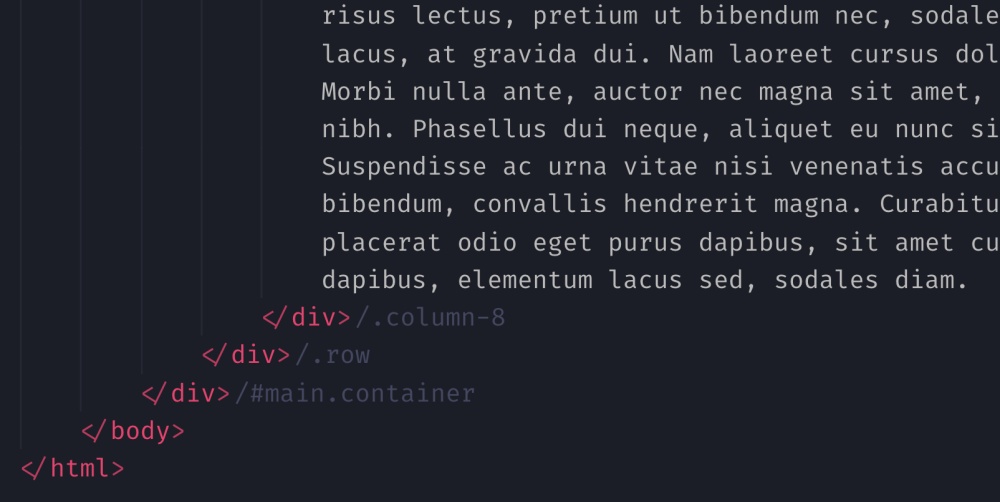
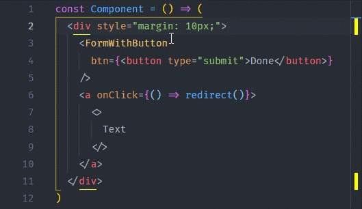

Extensions for HTML
Arfian Surya Abdullah
Arfian Surya Abdullah
DataStax Astra — Open, multi-cloud stack for modern apps
Let’s look at some extensions for VS Code that make writing and editing HTML (and languages that are basically HTML with extra powers) better. You may not like all of them. Maybe some of them don’t appeal to you, solve a problem you don’t have, or feel like more clutter than you need. That’s OK. These are just a handful that I’ve tried and liked to some degree. I’d start with Emmet here, even thought it’s not technically an extension1 for VS Code. It’s built right in. You should know about it though because it’s very useful. It does “HTML Expansions” like this, which I use pretty much every day of my life:
I heard about this one from Stefan Judis who blogged about it the other day and inspired this post idea. The whole idea is that rather than you leaving comments in your HTML to indicate what HTML element it is closing (a somewhat common practice, especially for partials that close elements that might not be opened in the same document).
As soon as you type the > in an HTML element, like the last bracket in div, the closing tag is automatically created for you.
Here’s the GIF from their docs:
I was going to do my own video, but I discovered that even if I have this extension off, something else in my VS Code is highlighting matching tags anyway. I’m not entirely sure what it is, which leads me to believe it might be a built-in feature now.